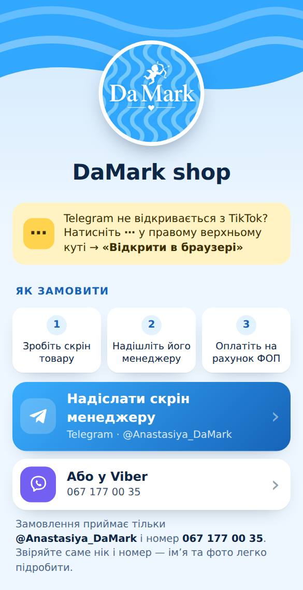
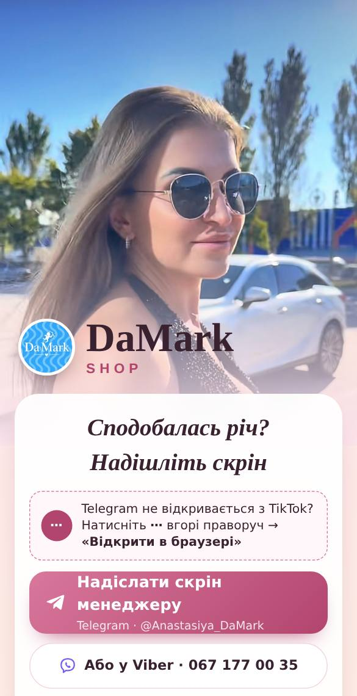
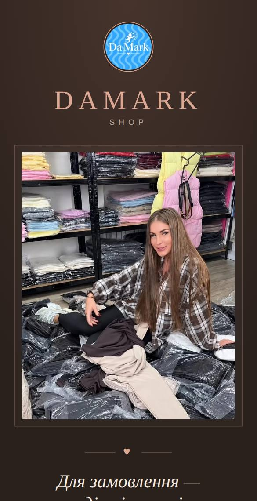
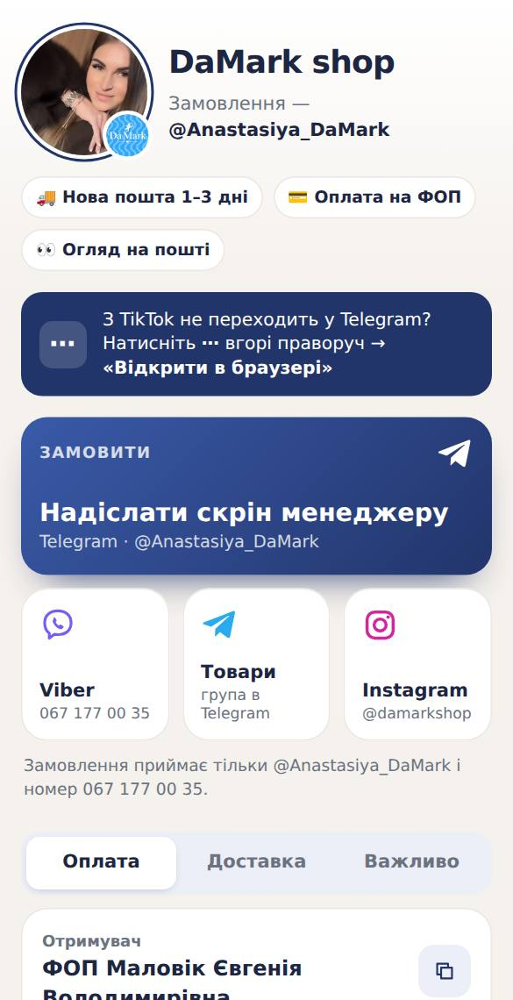
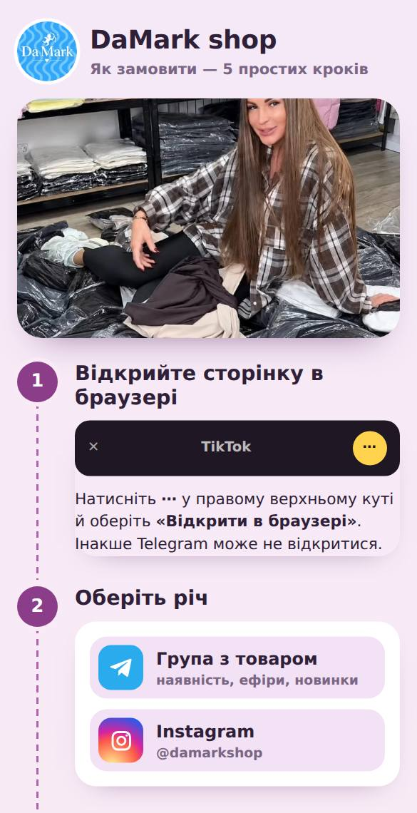

1Зараз на головномуБлакитний
Логотип угорі, далі все по черзі картками: як замовити, контакти, реквізити, умови. У кольорах логотипу.
Кожен варіант — окреме посилання. Відрізняються не лише кольором, а й будовою сторінки. Відкрийте на телефоні, порівняйте й назвіть номер — поставимо його на головне посилання nexlyy.github.io/damark.

1Зараз на головномуЛоготип угорі, далі все по черзі картками: як замовити, контакти, реквізити, умови. У кольорах логотипу.

2Фото Анни на весь екран, кнопки замовлення на картці поверх. Реквізити, умови й відкладені речі згортаються — сторінка коротка.

3Темна й спокійна, як Gomes Shop, але легше читається. Фото в рамці, одна велика кнопка Telegram, реквізити копіюються дотиком.

4Як профіль у соцмережі: кругле фото, три факти, плитки зв’язку. Оплата, доставка й «Важливо» — у вкладках, усе майже на одному екрані.

5Сторінка сама пояснює: п’ять кроків від «Відкрийте в браузері» до посилки, у кожному — свої кнопки. Найзрозуміліше для нових покупців.
Можна змішувати: наприклад, будова з варіанта 5 у кольорах варіанта 2. Напишіть, що з чого взяти.